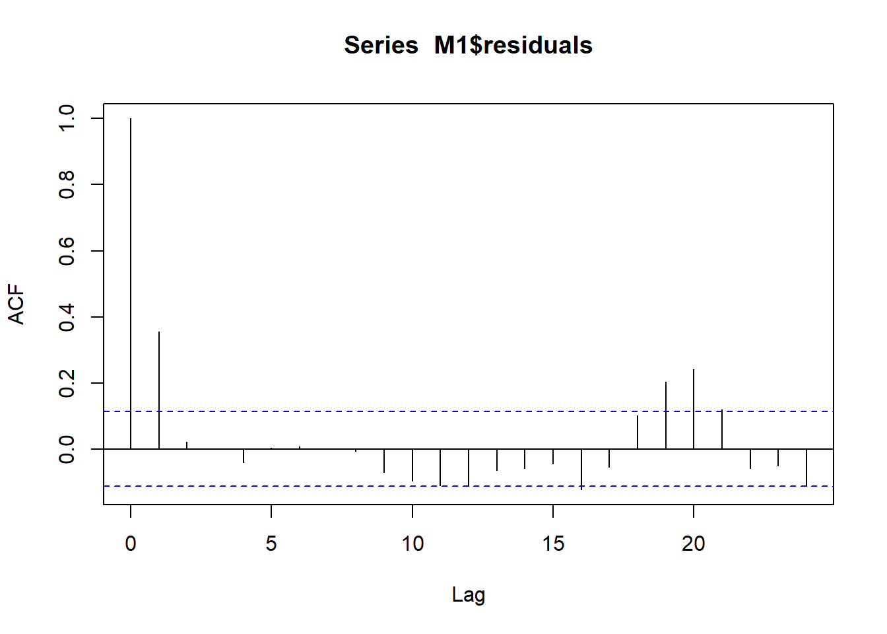

library(ggplot2)
library(psych)
library(Hmisc)
library(car)
library(lmtest)
library(effectsize)
library(rcompanion)
library(tidyr)
library(predictmeans)
library(ez)
library(lme4)Datenanalyse ALM - Messwiederholung
Allgemeines Lineares Modell - Messwiederholung
In den letzten Sitzungen haben wir schon einige wichtige Eckpunkte des ALM (wieder) kennen gelernt. Wir haben aber leider noch ignoriert, dass wir in unserem Design eine wichtige Besonderheit haben: eine Messwiederholung. Jede Person durchläuft nämlich sowohl eine Prä- als auch eine Post-Messung. Heute wollen wir versuchen, das akkurater zu analysieren.
Vorbereitung
Wie gehabt laden wir Pakete und Daten.
Auch hier bitte darauf achten, dass das Verzeichnis für die Datei stimmt.
#setwd("Sitzungen")
dat_1 <- read.csv(file = "Dat_VR_Anxiety_lm1.csv", header = TRUE, sep = ",", dec = ".", na.strings = "NA")
# Characterstrings als Faktoren definieren
dat_1$Gruppe <- as.factor(dat_1$Gruppe)
dat_1$Gruppe <- factor(dat_1$Gruppe, levels = c("in_virtuo", "in_sensu", "Warteliste")) Transformation der Daten ins Long-Format
Heute kommen wir auf einen wichtigen Inhalt des Vorkurses, die Datentransformation, zurück.
Nur durch eine Transformation ins Long-Format kann jeder der Messzeitpunkte ein Prädiktor sein. Jeder Prädiktor muss eine Variable in einer Spalte sein => damit kommt jede Person zwei Mal vor, d.h. in zwei Zeilen.
dat_1_long <- as.data.frame(pivot_longer(dat_1, cols = c(Pre, Post), names_to = "Zeitpunkt",
values_to = "SP_score", values_drop_na = FALSE))
dat_1_long$Zeitpunkt <- as.factor(dat_1_long$Zeitpunkt)
dat_1_long$Zeitpunkt <- factor(dat_1_long$Zeitpunkt, levels = c("Pre", "Post"))
dat_1_long$ID <- as.factor(dat_1_long$ID)Visuelle Analyse
# Soziale Phobie als Kriterium/outcome
print(ggplot(dat_1_long, aes(x=Zeitpunkt, y=SP_score)) +
geom_violin() +
geom_jitter(width = 0.3, height = 0, col = "grey", size = 0.5) +
facet_wrap(~Gruppe)+
ylab("Score Soziale Phobie") +
xlab("Zeitpunkt") +
ggtitle("Veränderung Soziale Phobie Prä zu Post"))print(ggplot(dat_1_long, aes(x=Zeitpunkt, y=SP_score, group = ID)) +
facet_wrap(~Gruppe)+
geom_line(aes(color= ID), show.legend = FALSE) +
ylab("Score Soziale Phobie") +
xlab("Zeitpunkt") +
ggtitle("Veränderung Soziale Phobie Prä zu Post"))Deskriptive Analyse
descriptives <- describeBy(SP_score ~ Zeitpunkt + Gruppe, mat = TRUE, data = dat_1_long)
descriptives item group1 group2 vars n mean sd median trimmed mad
SP_score1 1 Pre in_virtuo 1 50 20.12 3.847289 20.0 20.125 4.4478
SP_score2 2 Post in_virtuo 1 50 10.46 2.451239 10.0 10.350 2.9652
SP_score3 3 Pre in_sensu 1 50 20.36 3.578621 20.5 20.225 3.7065
SP_score4 4 Post in_sensu 1 50 16.16 3.247354 16.0 16.075 4.4478
SP_score5 5 Pre Warteliste 1 50 19.68 3.760373 19.5 19.625 3.7065
SP_score6 6 Post Warteliste 1 50 19.54 3.615217 19.0 19.525 4.4478
min max range skew kurtosis se
SP_score1 13 28 15 0.01784591 -0.8657982 0.5440888
SP_score2 6 17 11 0.40171741 -0.1101339 0.3466575
SP_score3 14 30 16 0.32116519 -0.1804366 0.5060935
SP_score4 10 24 14 0.28721220 -0.7375049 0.4592452
SP_score5 10 28 18 0.12292023 -0.1102863 0.5317971
SP_score6 12 26 14 0.03625233 -1.0225598 0.5112689#### Namen der Faktoren in Ergebnimatrix einfuegen
names(descriptives)[names(descriptives) == "group1"] <- "Zeitpunkt"
names(descriptives)[names(descriptives) == "group2"] <- "Bedingung"
#### Konfidenzintervall ausrechnen
descriptives$ci_95 <- descriptives$se*1.96
descriptives$Zeitpunkt <- factor(descriptives$Zeitpunkt, levels = c("Pre", "Post"))
descriptives$Bedingung <- factor(descriptives$Bedingung, levels = c("in_virtuo", "in_sensu", "Warteliste"))
#### Grafik machen
pd <- position_dodge(0.3) # zum Versetzen der Punkte
ggplot(descriptives, aes(x=Zeitpunkt, y=mean, group = Bedingung)) +
geom_errorbar(width=.2, aes(ymin=mean-ci_95, ymax=mean+ci_95), position = pd) +
geom_point(aes(color = Bedingung), size=2, position = pd) +
geom_line(aes(linetype=Bedingung, color = Bedingung), position = pd) +
ggtitle("Mittelwerte plus/minus 95% Konfidenzintervall")+
theme_classic()Modell mit Zeitpunkt als Prädiktor
Behandlung und Zeitpunkt sowie ihre Interaktion sagen Score in sozialer Phobie vorher.
Schritt 1: Allgemeines lineares Modell anpassen
ACHTUNG: DAS FOLGENDE IST FALSCH UND DIENT NUR DER VERANSCHAULICHUNG!
# Modelldefinition
contrasts(dat_1_long$Gruppe) <- contr.helmert(3)
M1 <- lm(SP_score ~ Gruppe * Zeitpunkt, data = dat_1_long)
# Schaetzung der Parameter
summary(M1)
Call:
lm(formula = SP_score ~ Gruppe * Zeitpunkt, data = dat_1_long)
Residuals:
Min 1Q Median 3Q Max
-9.68 -2.36 -0.26 2.48 9.64
Coefficients:
Estimate Std. Error t value Pr(>|t|)
(Intercept) 20.0533 0.2816 71.210 < 2e-16 ***
Gruppe1 0.1200 0.3449 0.348 0.728
Gruppe2 -0.1867 0.1991 -0.937 0.349
ZeitpunktPost -4.6667 0.3983 -11.718 < 2e-16 ***
Gruppe1:ZeitpunktPost 2.7300 0.4878 5.597 5.00e-08 ***
Gruppe2:ZeitpunktPost 2.2633 0.2816 8.037 2.25e-14 ***
---
Signif. codes: 0 '***' 0.001 '**' 0.01 '*' 0.05 '.' 0.1 ' ' 1
Residual standard error: 3.449 on 294 degrees of freedom
Multiple R-squared: 0.5175, Adjusted R-squared: 0.5093
F-statistic: 63.07 on 5 and 294 DF, p-value: < 2.2e-16# ANOVA zur Bestimmung der Quadratsummen für die beiden Prädiktoren
Anova(M1)Anova Table (Type II tests)
Response: SP_score
Sum Sq Df F value Pr(>F)
Gruppe 976.9 2 41.060 < 2.2e-16 ***
Zeitpunkt 1633.3 1 137.308 < 2.2e-16 ***
Gruppe:Zeitpunkt 1141.0 2 47.962 < 2.2e-16 ***
Residuals 3497.2 294
---
Signif. codes: 0 '***' 0.001 '**' 0.01 '*' 0.05 '.' 0.1 ' ' 1Ungeachtet dem obigen Disclaimer steckt in diesem Code etwas, das wir so in diesem Modul noch nicht hatten. Gruppe * Zeitpunkt bei der Modellaufstellung bedeutet, dass R jeweils die Faktoren Gruppe und Zeitpunkt und ihre Interaktion ins Modell einschließen soll. Dies ist eine Kurzschreibweise für Gruppe + Zeitpunkt + Gruppe:Zeitpunkt.
Bei der Modellaufstellung signalisiert also eigentlich ein Doppelpunkt zwischen zwei Prädiktornamen ihre Interaktion, aber da man so oft Haupt- und Interaktionseffekte einschließen möchte, gibt es die Kurzschreibweise mit dem *.
Bei diesem neuen Modell läuft die Interpretation anders. Da der Zeitpunkt jetzt auch ein Faktor ist, beziehen sich die Koeffizienten nicht mehr auf die Postwerte oder die Veränderung, sondern auf die Prä-Werte. Die Treatment-Parameter Gruppe1 und Gruppe2 für die Gruppenunterschiede beziehen sich jetzt also auf die Scores zu der Zeit, bei der noch kein Treatment stattgefunden hat. Das erklärt zum Beispiel, warum es hier keine signifikanten Unterschiede gibt.
Wir bekommen nun auch einen Koeffizienten für den Zeitpunkt. Dieser bezieht sich auf den Effekt im Mittel über die Gruppen hinweg. Das liegt daran, dass die Treatmentgruppe kontrastkodiert ist.
Die eigentlichen Gruppenunterschiede stecken jetzt in den Interaktionsparametern, die sich genauso interpretieren lassen, wie wir es von der Kontrastkodierung schon kennen, also bspw. “Wenn es um den Post-Zeitpunkt geht, dann gibt es Unterschiede zwischen Ausprägung x und y im Score”.
Kritisches Problem des Modells: Abhängigkeit der Messungen (Check 3)
# Graphik der Zusammenhänge der Residuen
acf(M1$residuals)
# Test für Autokorrelation 1.Ordnung
durbinWatsonTest(M1) # Test für eine Autokorrelation 1.Ordnung lag Autocorrelation D-W Statistic p-value
1 0.3554671 1.280913 0
Alternative hypothesis: rho != 0# Korrelation Prä-Post Messung
cor(dat_1$Pre, dat_1$Post)[1] 0.4564356Der Test auf Autokorrelation wird signifikant, was bedeutet, dass hier eine Autokorrelation vorliegt. Diese Autokorrelation von ca. 0.36 zwigt sich auch im entsprechenden Plot im zweiten Balken (bei lag = 1).
Um diese Autokorrelation zu vermeiden gibt es mehrere Möglichkeiten. Man kann bspw. auf Messwiederholungsvarianzanalysen ausweichen.
Quick fix: Messwiederholungsvarianzanalyse
# Option 1: Varianzanalyse
## Definition Kontraste
contrasts(dat_1_long$Gruppe) <- contr.helmert(3)
## Berechnung Varianzanalyse
aov_m2 <- ezANOVA(dat_1_long, dv=SP_score, wid = ID, within = Zeitpunkt, between = Gruppe, detailed = TRUE, return_aov = TRUE)
aov_m2$ANOVA
Effect DFn DFd SSn SSd F p p<.05
1 (Intercept) 1 147 94199.520 3065.62 4516.97518 2.942005e-112 *
2 Gruppe 2 147 976.860 3065.62 23.42078 1.480735e-09 *
3 Zeitpunkt 1 147 1633.333 431.62 556.27635 7.975457e-52 *
4 Gruppe:Zeitpunkt 2 147 1141.047 431.62 194.30733 5.335420e-42 *
ges
1 0.9642031
2 0.2183366
3 0.3183530
4 0.2460061
$aov
Call:
aov(formula = formula(aov_formula), data = data)
Grand Mean: 17.72
Stratum 1: ID
Terms:
Gruppe Residuals
Sum of Squares 976.86 3065.62
Deg. of Freedom 2 147
Residual standard error: 4.566679
2 out of 4 effects not estimable
Estimated effects are balanced
Stratum 2: ID:Zeitpunkt
Terms:
Zeitpunkt Gruppe:Zeitpunkt Residuals
Sum of Squares 1633.333 1141.047 431.620
Deg. of Freedom 1 2 147
Residual standard error: 1.713532
Estimated effects are balancedHier gibt es aber unter anderem das große Problem, dass die Fähigkeit, gerichtete Zusammenhänge zu testen, verloren geht.
Einfachere Lösung: Multilevel-Modell
Wir werden das Problem der Autokorrelation zwar erst lösen, wenn wir uns Growth-Models anschauen, aber da wir sie für die Lösung brauchen und es noch mehre Probleme mit dem klassischen ALM bei Messwiederholung gibt, wechseln wir zu Multilevel-Modellen.
# Definition Modell mit random intercept pro Teilnehmer*in = intercept variiert zwischen den Teilnehmer:innen
M3 <- lmerTest::lmer(SP_score ~ Gruppe * Zeitpunkt + (1|ID), data = dat_1_long)
# Zeigen geschätzte Koeffizienten
summary(M3)Linear mixed model fit by REML. t-tests use Satterthwaite's method [
lmerModLmerTest]
Formula: SP_score ~ Gruppe * Zeitpunkt + (1 | ID)
Data: dat_1_long
REML criterion at convergence: 1469.8
Scaled residuals:
Min 1Q Median 3Q Max
-2.00405 -0.52070 -0.02507 0.51567 2.23698
Random effects:
Groups Name Variance Std.Dev.
ID (Intercept) 8.959 2.993
Residual 2.936 1.714
Number of obs: 300, groups: ID, 150
Fixed effects:
Estimate Std. Error df t value Pr(>|t|)
(Intercept) 20.0533 0.2816 187.5888 71.210 <2e-16 ***
Gruppe1 0.1200 0.3449 187.5888 0.348 0.728
Gruppe2 -0.1867 0.1991 187.5888 -0.937 0.350
ZeitpunktPost -4.6667 0.1979 147.0000 -23.586 <2e-16 ***
Gruppe1:ZeitpunktPost 2.7300 0.2423 147.0000 11.266 <2e-16 ***
Gruppe2:ZeitpunktPost 2.2633 0.1399 147.0000 16.177 <2e-16 ***
---
Signif. codes: 0 '***' 0.001 '**' 0.01 '*' 0.05 '.' 0.1 ' ' 1
Correlation of Fixed Effects:
(Intr) Grupp1 Grupp2 ZtpnkP Gr1:ZP
Gruppe1 0.000
Gruppe2 0.000 0.000
ZeitpnktPst -0.351 0.000 0.000
Grpp1:ZtpnP 0.000 -0.351 0.000 0.000
Grpp2:ZtpnP 0.000 0.000 -0.351 0.000 0.000# Signifikanztest für Faktoren
Anova(M3)Analysis of Deviance Table (Type II Wald chisquare tests)
Response: SP_score
Chisq Df Pr(>Chisq)
Gruppe 46.842 2 6.737e-11 ***
Zeitpunkt 556.276 1 < 2.2e-16 ***
Gruppe:Zeitpunkt 388.615 2 < 2.2e-16 ***
---
Signif. codes: 0 '***' 0.001 '**' 0.01 '*' 0.05 '.' 0.1 ' ' 1# Geschätzte Mittelwerte
predmeans <- predictmeans(M3, "Gruppe:Zeitpunkt", adj ="BH", barplot = TRUE)
predmeans$`Predicted Means`
Zeitpunkt Pre Post
Gruppe
in_virtuo 20.12 10.46
in_sensu 20.36 16.16
Warteliste 19.68 19.54
$`Standard Error of Means`
All means have the same Stder
0.48776
$`Standard Error of Differences`
Max.SED Min.SED Aveg.SED
0.6897934 0.3427063 0.6203760
attr(,"For the Same Level of Factor")
Gruppe Zeitpunkt
Aveg.SED 0.3427063 0.6897934
Min.SED 0.3427063 0.6897934
Max.SED 0.3427063 0.6897934
$LSD
Max.LSD Min.LSD Aveg.LSD
1.36319 0.67727 1.22601
attr(,"For the Same Level of Factor")
Gruppe Zeitpunkt
Aveg.LSD 0.67727 1.36319
Min.LSD 0.67727 1.36319
Max.LSD 0.67727 1.36319
attr(,"Significant level")
[1] 0.05
attr(,"Degree of freedom")
[1] 147
$`Pairwise p-value`
in_virtuo:Pre in_virtuo:Post in_sensu:Pre in_sensu:Post
in_virtuo:Pre 0.0000 28.1874 -0.3479 5.7408
in_virtuo:Post 0.0000 0.0000 -14.3521 -8.2633
in_sensu:Pre 0.7284 0.0000 0.0000 12.2554
in_sensu:Post 0.0000 0.0000 0.0000 0.0000
Warteliste:Pre 0.6052 0.0000 0.4443 0.0000
Warteliste:Post 0.5023 0.0000 0.3547 0.0000
Warteliste:Pre Warteliste:Post
in_virtuo:Pre 0.6379 0.8408
in_virtuo:Post -13.3663 -13.1634
in_sensu:Pre 0.9858 1.1888
in_sensu:Post -5.1030 -4.9000
Warteliste:Pre 0.0000 0.4085
Warteliste:Post 0.7284 0.0000
attr(,"Degree of freedom")
[1] 147
attr(,"Note")
[1] "The matrix has t-value above the diagonal, p-value (adjusted by 'BH' method) below the diagonal"
attr(,"Letter-based representation of pairwise comparisons at significant level '0.05'")
Treatment Mean Group
1 in_sensu:Pre 20.36 A
2 in_virtuo:Pre 20.12 A
3 Warteliste:Pre 19.68 A
4 Warteliste:Post 19.54 A
5 in_sensu:Post 16.16 B
6 in_virtuo:Post 10.46 C
$mean_table
Gruppe Zeitpunkt Predicted means Standard error Df LL of 95% CI
1 in_virtuo Pre 20.12 0.4877576 147 19.156077
2 in_virtuo Post 10.46 0.4877576 147 9.496077
3 in_sensu Pre 20.36 0.4877576 147 19.396077
4 in_sensu Post 16.16 0.4877576 147 15.196077
5 Warteliste Pre 19.68 0.4877576 147 18.716077
6 Warteliste Post 19.54 0.4877576 147 18.576077
UL of 95% CI LetterGrp
1 21.08392 A
2 11.42392 B
3 21.32392 A
4 17.12392 C
5 20.64392 A
6 20.50392 A predmeans$predictmeansBarPlotEin überzeugendes Argument für die Nutzung dieser Modelle ist die Möglichkeit, einzubauen, dass es individuelle Unterschiede in bestimmten Aspekten des Modells gibt. So drücken wir mit dem Term (1|ID) aus, dass der Intercept zwischen Personen variiert. Das bedeutet auf deutsch, dass wir die ziemlich realistische Annahme zulassen, dass sich verschiedene Personen in ihrer Präbelastung unterscheiden. Es ließe sich mit diesen Modellen sogar testen, ob variable oder feste Intercepts die Datenlage besser beschreiben, aber das wollen wir hier erstmal nicht tun.
Die Interpretation läuft analog zum normalen ALM, wobei wir zusätzlich eine Schätzung für die Varianz der Intercepts bekommen, die wir zusätzlich interpretieren können.
Check 2: Prüfung der Residuen
library(nlme)
# Das gleiche Modell nur mit einem anderen Paket gemacht
M4 <- lme(SP_score ~ Gruppe * Zeitpunkt, random = ~1|ID, data = dat_1_long)
summary(M4)Linear mixed-effects model fit by REML
Data: dat_1_long
AIC BIC logLik
1485.834 1515.302 -734.9169
Random effects:
Formula: ~1 | ID
(Intercept) Residual
StdDev: 2.993191 1.713531
Fixed effects: SP_score ~ Gruppe * Zeitpunkt
Value Std.Error DF t-value p-value
(Intercept) 20.053333 0.2816071 147 71.21033 0.0000
Gruppe1 0.120000 0.3448968 147 0.34793 0.7284
Gruppe2 -0.186667 0.1991263 147 -0.93743 0.3501
ZeitpunktPost -4.666667 0.1978615 147 -23.58552 0.0000
Gruppe1:ZeitpunktPost 2.730000 0.2423299 147 11.26564 0.0000
Gruppe2:ZeitpunktPost 2.263333 0.1399092 147 16.17716 0.0000
Correlation:
(Intr) Grupp1 Grupp2 ZtpnkP Gr1:ZP
Gruppe1 0.000
Gruppe2 0.000 0.000
ZeitpunktPost -0.351 0.000 0.000
Gruppe1:ZeitpunktPost 0.000 -0.351 0.000 0.000
Gruppe2:ZeitpunktPost 0.000 0.000 -0.351 0.000 0.000
Standardized Within-Group Residuals:
Min Q1 Med Q3 Max
-2.00405142 -0.52070266 -0.02507123 0.51566764 2.23698172
Number of Observations: 300
Number of Groups: 150 # Residuen
densityplot(residuals(M4, type = "normalized"))## Normalisierung ist wichtig, damit Abhängigkeiten richtig berücksichtigt werden
# Abspeichern der Residuen und fitted values in Vektoren
res.vec <- residuals(M4, type = "normalized")
fit.vec <- M4$fitted[,1]
# Scatterplot machen
scatterplot(res.vec ~ fit.vec)